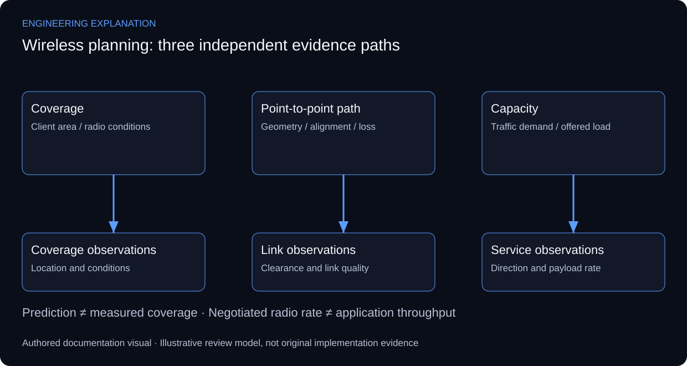

Network Engineering · RF Planning
Wireless Coverage & Point-to-Point Network Planning
Modelled wireless coverage and point-to-point connectivity, considering antenna alignment, capacity requirements and site coverage.
Implemented Project
System architecture
Implementation scope
Coverage describes where access is available; point-to-point planning describes the transport between sites. Antenna placement and alignment influence both the proposed link and its installation.
Coverage, backhaul and capacity answer different questions
The implementation covers wireless coverage modelling and point-to-point connectivity, including antenna alignment, capacity and site coverage. The original planning media are preserved. A colour coverage view communicates spatial planning but does not, by itself, provide measured signal strength or a complete capacity test.
Coverage asks where a client can maintain the required radio service. Backhaul asks whether the path between fixed endpoints has adequate propagation and clearance. Capacity asks whether the radio and network can deliver the required traffic under the defined load. Treating these as separate review paths keeps a nominally covered area from being presented as guaranteed throughput.
A planning record needs the radio settings, antenna pattern, installation geometry and environmental assumptions associated with its prediction. Field validation then associates locations and conditions with measurements. ITU-R P.530 supplies point-to-point propagation context, while a site-specific WLAN plan also needs the selected equipment and client conditions. No frequencies or sector counts are reconstructed from the low-resolution preview.
Alignment should be reviewed against the intended endpoint and polarisation before optimising observed signal. Capacity validation should distinguish radio link quality, negotiated rate and application throughput, and state direction and offered load. The diagram below is an engineering review map, not a newly simulated or surveyed coverage result.

Review scenarios and expected evidence
These scenarios specify what evidence would support a review. They do not report additional completed tests.
| Review area | Method | Evidence to inspect |
|---|---|---|
| Coverage prediction | State radio and geometry assumptions | Model context attached to its coverage view |
| Path alignment | Check endpoint direction and polarisation | Alignment record linked to link quality |
| Capacity | Separate negotiated rate from payload throughput | Direction, load and test duration recorded |
| Field review | Associate observations with locations/conditions | Measured points separated from predictions |
Technical references and provenance
Primary references support the engineering explanation, not claims about this project's undocumented configuration or results.
No new coverage heatmap, site coordinates or throughput measurement is fabricated. The source planning view remains the available project evidence.
Engineering approach
The available planning image illustrates the project deliverable. This network-planning work is distinct from the VB.NET line-of-sight calculator, which supports calculations rather than documenting a deployment.
Source context
Original project posters and interface screenshots are identified separately from explanatory source diagrams. The gallery documents this project only. Open any figure to inspect it at full available resolution.
Verification context
The functional diagram explains this implementation’s engineering responsibilities. The original source preview appears above. As-built addressing, configuration exports and raw acceptance records are not included in the public release.
Detailed verification boundaries and technical source context